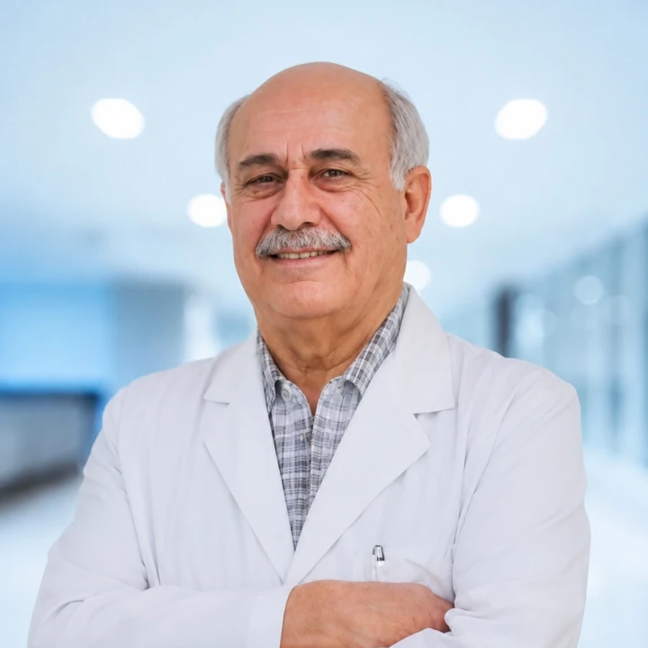

Dr. Munir Silwadi · Silwadi Dental Center, Abu Dhabi
Doctor profile
Dr. Munir Silwadi
Specialist Prosthodontist & Implantologist
Dr. Munir Silwadi's clinical work includes implantology, full-mouth rehabilitation and CAD/CAM aesthetic dentistry. His professional profile also includes international lecturing and CEREC training.
Clinical focus
Selected areas highlighted in Dr. Silwadi's professional profile include implant and restorative treatment planning, complex rehabilitation and digital aesthetic workflows.
Qualifications & professional credentials
- Canadian Dental Board Certificate
- Fellow, International College of Dentists
- Fellow, Academy of Dentistry International
- CEREC Master and ISCD Certified International Trainer
- DOH licensed in prosthodontics and implantology
- DHA licensed in prosthodontics and implantology
Treatment interests
Dr. Silwadi's published centre profile highlights immediate implants, All-on-4 / All-on-6 concepts, computer-guided implant treatment, full-mouth rehabilitation, CAD/CAM veneers and crowns, and digital smile design. Suitability for any treatment is determined after clinical assessment.
Related doctors
Silwadi Dental Center's multidisciplinary team includes clinicians across orthodontics, periodontics, endodontics and general dentistry.